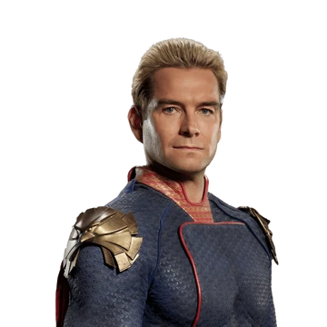
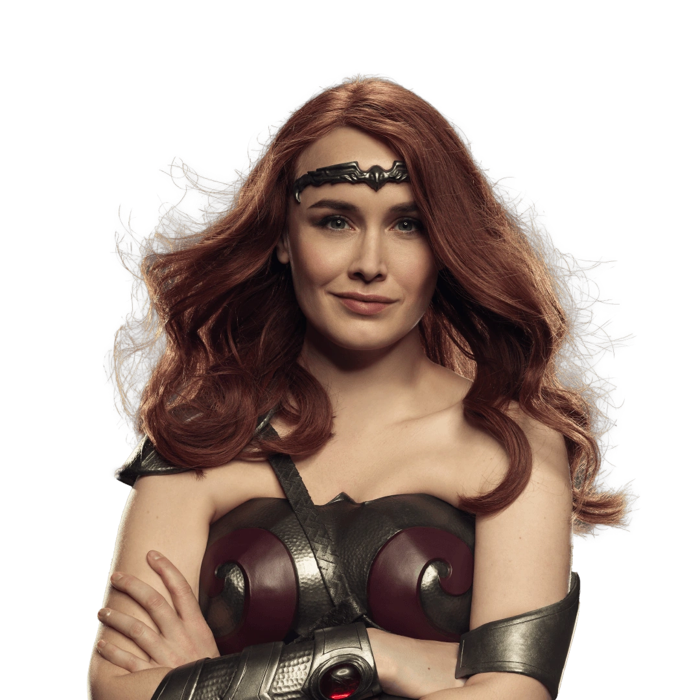
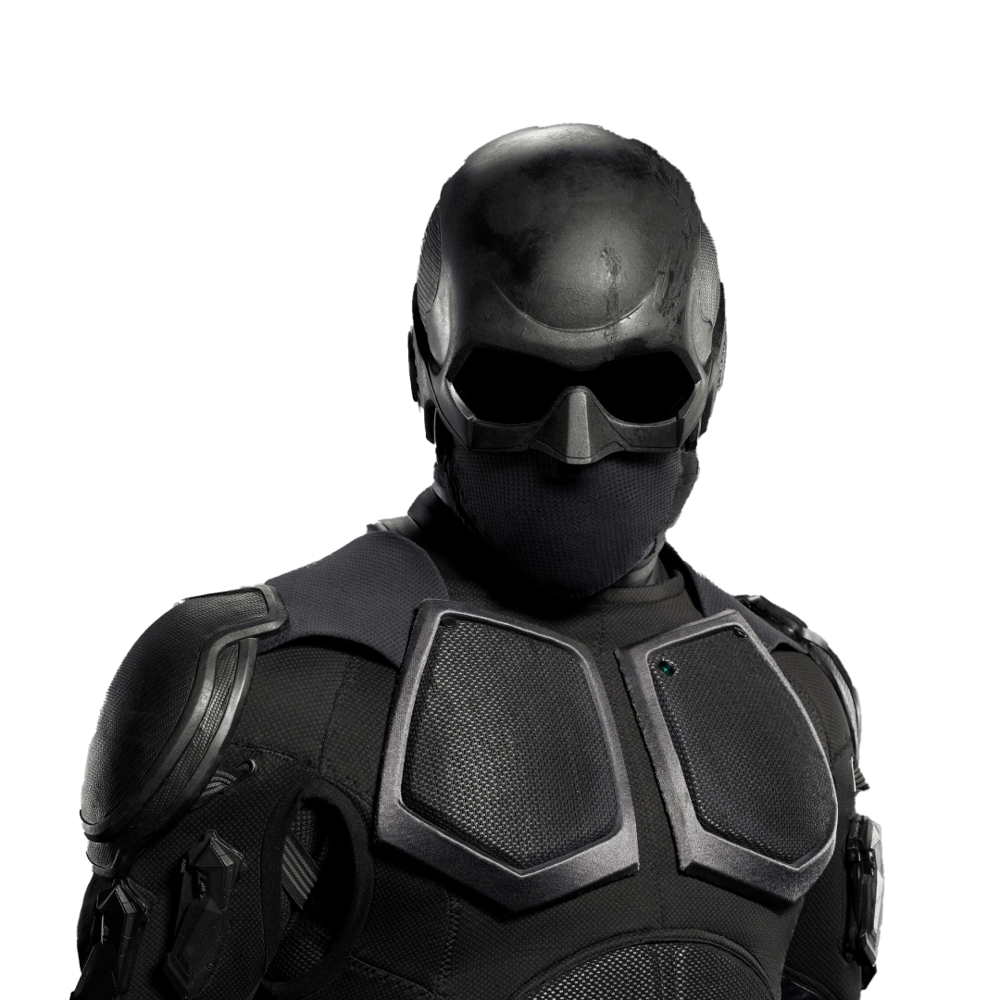
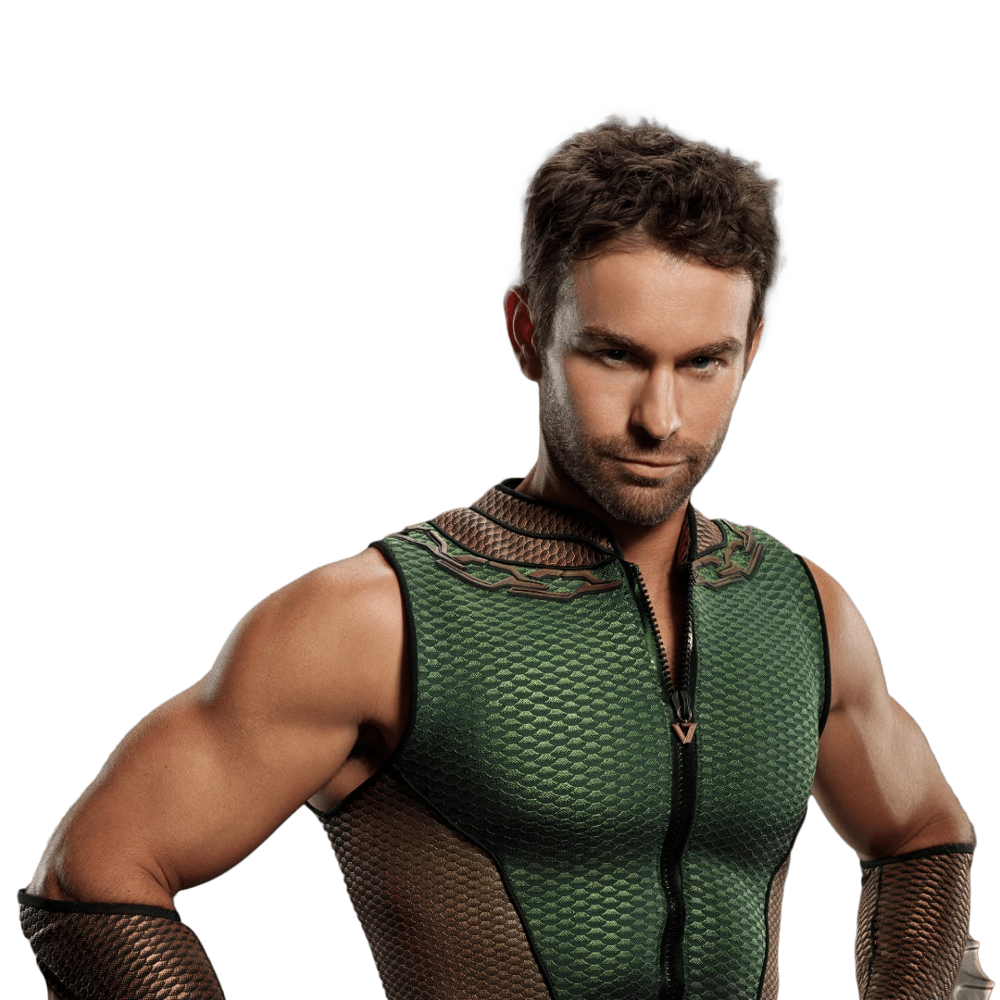
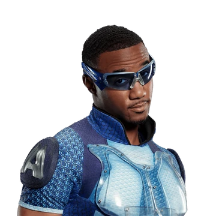
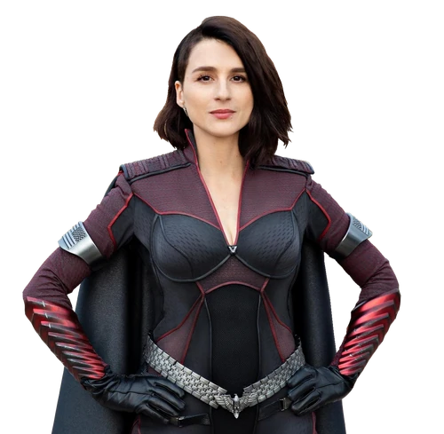

The Seven
-
Soldier Boy

Soldier Boy é um super-herói que fazia parte da equipe original dos Sete e é considerado o primeiro super-herói nacional dos Estados Unidos. O personagem é conhecido por suas habilidades de combate e força física, além de ser muito patriota. Nos eventos da história, ele é retratado como tendo lutado na Segunda Guerra Mundial e como alguém que lutou pela liberdade e justiça nos Estados Unidos. No entanto, ao longo da história, sua visão de mundo e suas ações têm sido questionadas, o que contribui para a trama da série.
-
Homelander
O Capitão Pátria é o líder do grupo de super-heróis conhecido como Os Sete, e é um indivíduo com superpoderes invencíveis e altamente manipulador e obssesivo.
-
Rainha Meave
A Personagem Rainha Maeve é uma super-heroína poderosa, com habilidades incríveis de luta e força. Meave é uma heroina justa onde ela tem que lidar com ações moralmente questionáveis em seu papel como membro dos Seven.
-
Black Noir
Black Noir é um personagem misterioso e quieto, vestido com um traje preto completo, incluindo uma máscara que cobre todo o seu rosto.Black Noir raramente fala, e suas motivações e origens são pouco conhecidas.
-
Profundo
O Profundo é mostrado como tendo uma personalidade narcisista e arrogante, que muitas vezes o leva a tratar aqueles ao seu redor com desrespeito e crueldade.No entanto, ao longo da série, é revelado que ele sofre de sentimentos profundos de inadequação e culpa, levando-o a tomar decisões questionáveis, incluindo comportamento abusivo com mulheres.
-
Trem Bala
Trem-Bala é um personagem egoísta e impulsionado por seu desejo de fama e reconhecimento. Ele é extremamente competitivo e fará qualquer coisa para se manter à frente de seus rivais, mesmo que isso signifique tomar drogas para aumentar sua velocidade e colocar sua vida em risco.
-
Tempesta
Tempesta é uma heroína que possui habilidades relacionadas ao controle do clima, como a capacidade de gerar tempestades, ventos fortes e relâmpagos.Ela tem uma personalidade forte e confiante, mas muitas vezes é retratada como um pilar de apoio emocional para outros personagens.
-
Translucido

Translúcido é um personagem egocêntrico e misógino, que muitas vezes usa sua invisibilidade para espionar e assediar mulheres. Ele também é conhecido por ser um dos membros mais cruéis dos Sete, muitas vezes usando sua força e invulnerabilidade para espancar e intimidar aqueles que considera inferiores.No entanto, apesar de tudo isso, Translúcido também é mostrado como sendo vulnerável a explosões, já que em um dos episódios da série a equipe The Boys consegue matá-lo através de uma bomba.